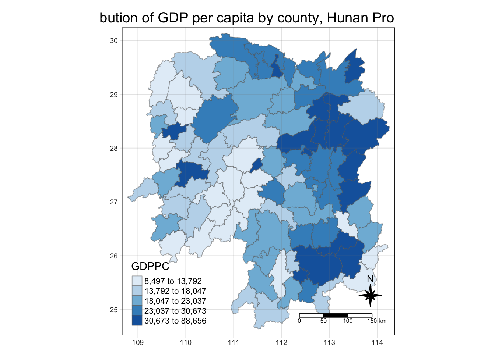

pacman::p_load(sf, sfdep, tmap, tidyverse)In Class Exercise 6
6.0 Overview
Spatial autocorrelation: term used to describe the presence of systematic spatial variation in a variable.
More negative correlation = more outliers (with a checkboard pattern)
Moran’s I (z value): Describe how features differ from the values in the study area as a whole
Positive value: Clustered, observations tend to be similar
Negative value: Dispersed, observations tend to be dissimilar
Approx. zero: Observations are arranged randomly over space
Geary c (z value): Describe how features different from their immediate neighbours
Positive value: Dispersed, observations tend to be dissimilar
Negative value: Clustered, observations tend to be similar
c=1: observations are arranged randomly over space
Confidence interval: value in which represents how confident you are, recommended to be 95%
6.1 Installing Packages
In this in class exercise, we will be using the following packages:
6.2 The Data
6.2.1 Import shapefile into r environment
The code chunk below uses st_read() of sf package to import Hunan shapefile into R. The imported shapefile will be simple features Object of sf.
hunan <- st_read(dsn = "data/geospatial",
layer = "Hunan")Reading layer `Hunan' from data source
`/Users/georgiaxng/georgiaxng/is415-handson/In-class_Ex/In-class_Ex06/data/geospatial'
using driver `ESRI Shapefile'
Simple feature collection with 88 features and 7 fields
Geometry type: POLYGON
Dimension: XY
Bounding box: xmin: 108.7831 ymin: 24.6342 xmax: 114.2544 ymax: 30.12812
Geodetic CRS: WGS 846.2.2 Import csv file into r environment
Next, we will import Hunan_2012.csv into R by using read_csv() of readr package. The output is R dataframe class.
hunan2012 <- read_csv("data/aspatial/Hunan_2012.csv")6.2.3 Performing relational join
The code chunk below will be used to update the attribute table of hunan’s SpatialPolygonsDataFrame with the attribute fields of hunan2012 dataframe. This is performed by using left_join() of dplyr package.
hunan_GDPPC <- left_join(hunan,hunan2012)%>%
select(1:4,7,15)6.2.4 Plotting Chloropeth Map
tmap_mode("plot")
tm_shape(hunan_GDPPC) +
tm_fill("GDPPC",
style = "quantile",
palette = "Blues",
title = "GDPPC") +
tm_layout(main.title = "Distribution of GDP per capita by county, Hunan Province",
main.title.position = "center",
main.title.size = 1.2,
legend.height = 0.45,
legend.width = 0.35,
frame = TRUE) +
tm_borders(alpha = 0.5) +
tm_compass(type="8star", size = 2) +
tm_scale_bar() +
tm_grid(alpha =0.2)
6.3 Global Measures of Spatial Association
6.3.1 Deriving contiguity weights: Queen’s method
Note: nb refers to the neighbours
wm_q <- hunan_GDPPC %>% mutate(nb = st_contiguity(geometry),
wt = st_weights(nb, style = "W"),
.before = 1)6.3.2 Computing Global Moran’s I
moranI<- global_moran(wm_q$GDPPC,
wm_q$nb,
wm_q$wt)
glimpse(moranI)List of 2
$ I: num 0.301
$ K: num 7.64
Tip
K refers to average neighbours they have
6.3.3 Performing Global Moran’s I Test
global_moran_test(wm_q$GDPPC,
wm_q$nb,
wm_q$wt)
Moran I test under randomisation
data: x
weights: listw
Moran I statistic standard deviate = 4.7351, p-value = 1.095e-06
alternative hypothesis: greater
sample estimates:
Moran I statistic Expectation Variance
0.300749970 -0.011494253 0.004348351 6.3.4 Performing Global Moran’s I permutation test
In practice, monte carlo simulation should be used to perform the statistical test. For sfdep, it is supported by globel_moran_perm()
It is alway a good practice to use set.seed() before performing simulation. This is to ensure that the computation is reproducible.
set.seed(1234)Next, global_moran_perm() is used to perform Monte Carlo simulation.
global_moran_perm(wm_q$GDPPC,
wm_q$nb,
wm_q$wt,
nsim = 99)
Monte-Carlo simulation of Moran I
data: x
weights: listw
number of simulations + 1: 100
statistic = 0.30075, observed rank = 100, p-value < 2.2e-16
alternative hypothesis: two.sidedThe statistical report above show that the p-value is smaller than alpha value of 0.05. Hence, we have enough statistical evidence to reject the null hypothesis that the spatial distribution of GPD per capita are resemble random distribution (i.e. independent from spatial). Because the Moran’s I statistics is greater than 0. We can infer that the spatial distribution shows sign of clustering.
Tip
The numbers of simulation is alway equal to nsim + 1. This mean in nsim = 99. This mean 100 simulation will be performed.
6.4 Computing Local Moran’s I & Visualisations
In this section, we will learn how to compute Local Moran’s I of GDPPC at county level by using local_moran() of sfdep package.
lisa <- wm_q %>%
mutate(local_moran = local_moran(
GDPPC, nb, wt, nsim = 99),
.before = 1) %>%
unnest(local_moran)
Note
unnest is to put it back to one single tibble table
To ensure consistency, stay with one p value (either p_ii_sim or p_folded sim(k4))
If skewness is close to 0, use mean, else, use median.
The output of local_moran() is a sf data.frame containing the columns ii, eii, var_ii, z_ii, p_ii, p_ii_sim, and p_folded_sim.
- ii: local moran statistic
- eii: expectation of local moran statistic; for localmoran_permthe permutation sample means
- var_ii: variance of local moran statistic; for localmoran_permthe permutation sample standard deviations
- z_ii: standard deviate of local moran statistic; for localmoran_perm based on permutation sample means and standard deviations p_ii: p-value of local moran statistic using pnorm(); for localmoran_perm using standard deviatse based on permutation sample means and standard deviations p_ii_sim: For
localmoran_perm(),rank()andpunif()of observed statistic rank for [0, 1] p-values usingalternative=-p_folded_sim: the simulation folded [0, 0.5] range ranked p-value (based on https://github.com/pysal/esda/blob/4a63e0b5df1e754b17b5f1205b cadcbecc5e061/esda/crand.py#L211-L213) - skewness: For
localmoran_perm, the output of e1071::skewness() for the permutation samples underlying the standard deviates - kurtosis: For
localmoran_perm, the output of e1071::kurtosis() for the permutation samples underlying the standard deviates.
6.4.1 Visualising local Moran’s I
In this code chunk below, tmap functions are used prepare a choropleth map by using value in the ii field.
tmap_mode("plot")
tm_shape(lisa) +
tm_fill("ii") +
tm_borders(alpha = 0.5) +
tm_view(set.zoom.limits = c(6,8)) +
tm_layout(main.title = "local Moran's I of GDPPC",
main.title.size = 0.8)6.4.2 Visualising p-value of local Moran’s I
In the code chunk below, tmap functions are used prepare a choropleth map by using value in the p_ii_sim field.
tmap_mode("plot")
tm_shape(lisa) +
tm_fill("p_ii_sim") +
tm_borders(alpha = 0.5) +
tm_layout(main.title = "p-value of local Moran's I",
main.title.size = 0.8)
Warning
For p-values, the appropriate classification should be 0.001, 0.01, 0.05 and not significant instead of using default classification scheme.
6.4.3 Visualising local Moran’s I and p-value
For effective comparison, it will be better for us to plot both maps next to each other as shown below.
Show the code
tmap_mode("plot")
map1 <- tm_shape(lisa) +
tm_fill("ii") +
tm_borders(alpha = 0.5) +
tm_view(set.zoom.limits = c(6,8)) +
tm_layout(main.title = "local Moran's I of GDPPC",
main.title.size = 0.8)
map2 <- tm_shape(lisa) +
tm_fill("p_ii",
breaks = c(0, 0.001, 0.01, 0.05, 1),
labels = c("0.001", "0.01", "0.05", "Not sig")) +
tm_borders(alpha = 0.5) +
tm_layout(main.title = "p-value of local Moran's I",
main.title.size = 0.8)
tmap_arrange(map1, map2, ncol = 2)
6.4.4 Visualising LISA map
LISA map is a categorical map showing outliers and clusters. There are two types of outliers namely: High-Low and Low-High outliers. Likewise, there are two type of clusters namely: High-High and Low-Low cluaters. In fact, LISA map is an interpreted map by combining local Moran’s I of geographical areas and their respective p-values.
In lisa sf data.frame, we can find three fields contain the LISA categories. They are mean, median and pysal. In general, classification in mean will be used as shown in the code chunk below.
lisa_sig <- lisa %>%
filter(p_ii < 0.05)
tmap_mode("plot")
tm_shape(lisa) +
tm_polygons() +
tm_borders(alpha = 0.5) +
tm_shape(lisa_sig) +
tm_fill("mean") +
tm_borders(alpha = 0.4)
6.5 Hot Spot and Cold Spot Area Analysis (HCSA)
HCSA uses spatial weights to identify locations of statistically significant hot spots and cold spots in an spatially weighted attribute that are in proximity to one another based on a calculated distance. The analysis groups features when similar high (hot) or low (cold) values are found in a cluster. The polygon features usually represent administration boundaries or a custom grid structure.
6.6 Computing local Gi* statistics
As usual, we will need to derive a spatial weight matrix before we can compute local Gi* statistics. Code chunk below will be used to derive a spatial weight matrix by using sfdep functions and tidyverse approach.
wm_idw <- hunan_GDPPC %>%
mutate(nb = st_contiguity(geometry),
wts = st_inverse_distance(nb, geometry,
scale = 1,
alpha = 1),
.before = 1)
Note
Gi* and local Gi* are distance-based spatial statistics. Hence, distance methods instead of contiguity methods should be used to derive the spatial weight matrix.
Now, we will compute the local Gi* by using the code chunk below.
HCSA <- wm_idw %>%
mutate(local_Gi = local_gstar_perm(
GDPPC, nb, wt, nsim = 99),
.before = 1) %>%
unnest(local_Gi)
HCSASimple feature collection with 88 features and 18 fields
Geometry type: POLYGON
Dimension: XY
Bounding box: xmin: 108.7831 ymin: 24.6342 xmax: 114.2544 ymax: 30.12812
Geodetic CRS: WGS 84
# A tibble: 88 × 19
gi_star cluster e_gi var_gi std_dev p_value p_sim p_folded_sim skewness
<dbl> <fct> <dbl> <dbl> <dbl> <dbl> <dbl> <dbl> <dbl>
1 0.0416 Low 0.0114 0.00000641 0.0493 9.61e-1 0.7 0.35 0.875
2 -0.333 Low 0.0106 0.00000384 -0.0941 9.25e-1 1 0.5 0.661
3 0.281 High 0.0126 0.00000751 -0.151 8.80e-1 0.9 0.45 0.640
4 0.411 High 0.0118 0.00000922 0.264 7.92e-1 0.6 0.3 0.853
5 0.387 High 0.0115 0.00000956 0.339 7.34e-1 0.62 0.31 1.07
6 -0.368 High 0.0118 0.00000591 -0.583 5.60e-1 0.72 0.36 0.594
7 3.56 High 0.0151 0.00000731 2.61 9.01e-3 0.06 0.03 1.09
8 2.52 High 0.0136 0.00000614 1.49 1.35e-1 0.2 0.1 1.12
9 4.56 High 0.0144 0.00000584 3.53 4.17e-4 0.04 0.02 1.23
10 1.16 Low 0.0104 0.00000370 1.82 6.86e-2 0.12 0.06 0.416
# ℹ 78 more rows
# ℹ 10 more variables: kurtosis <dbl>, nb <nb>, wts <list>, NAME_2 <chr>,
# ID_3 <int>, NAME_3 <chr>, ENGTYPE_3 <chr>, County <chr>, GDPPC <dbl>,
# geometry <POLYGON [°]>6.6.1 Visualising Gi*
tmap_mode("plot")
tm_shape(HCSA) +
tm_fill("gi_star") +
tm_borders(alpha = 0.5) +
tm_view(set.zoom.limits = c(6,8))6.6.2 Visualising p-value of HCSA
tmap_mode("plot")
tm_shape(HCSA) +
tm_fill("p_sim") +
tm_borders(alpha = 0.5)6.6.3 Visualising local HCSA
For effective comparison, you can plot both maps next to each other as shown below.
Show the code
tmap_mode("plot")
map1 <- tm_shape(HCSA) +
tm_fill("gi_star") +
tm_borders(alpha = 0.5) +
tm_view(set.zoom.limits = c(6,8)) +
tm_layout(main.title = "Gi* of GDPPC",
main.title.size = 0.8)
map2 <- tm_shape(HCSA) +
tm_fill("p_value",
breaks = c(0, 0.001, 0.01, 0.05, 1),
labels = c("0.001", "0.01", "0.05", "Not sig")) +
tm_borders(alpha = 0.5) +
tm_layout(main.title = "p-value of Gi*",
main.title.size = 0.8)
tmap_arrange(map1, map2, ncol = 2)7 Visualising hot spot and cold spot areas
Now, we are ready to plot the significant (i.e. p-values less than 0.05) hot spot and cold spot areas by using appropriate tmap functions as shown below.
HCSA_sig <- HCSA %>%
filter(p_sim < 0.05)
tmap_mode("plot")
tm_shape(HCSA) +
tm_polygons() +
tm_borders(alpha = 0.5) +
tm_shape(HCSA_sig) +
tm_fill("gi_star") +
tm_borders(alpha = 0.4)
Figure above reveals that there is one hot spot area and two cold spot areas. Interestingly, the hot spot areas coincide with the High-high cluster identifies by using local Moran’s I method in the earlier sub-section.